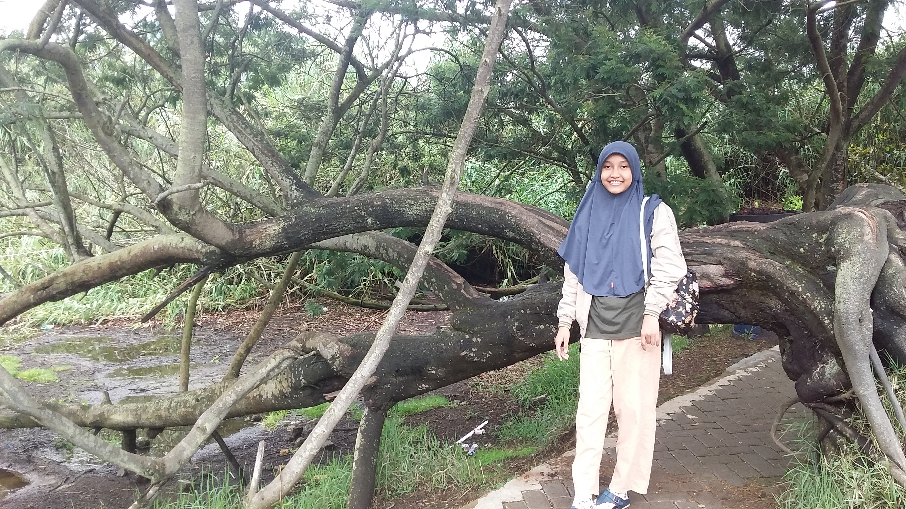
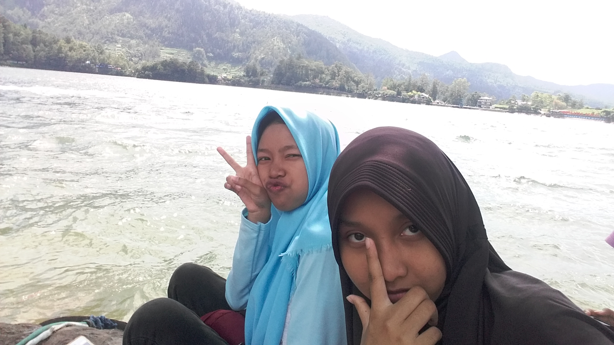
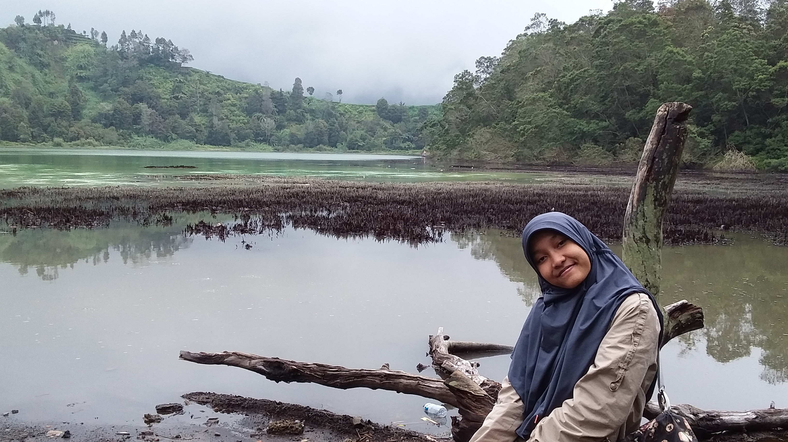

<Sebuah Halaman
Ketahuilah Bahwa Di Sini Ada Desti Aziza
KELAHIRAN
sebuah paduan kata, April 8, 2019
Kamis, 27 Desember 2001. Tepat di tanggal tersebut saya dilahirkan. 00.10 WIB, waktu yag sangat menegangkan bagi ibu saya. Berjuang sepenuh tenaga untuk mengajak saya melihat dunia. Seorang bayi yang suci telah lahir ke dunia. Tepat di tanggal tersebut juga umur saya mulai terhitung, dan saya mulai merasakan hidup

KELUARGA
Winarno's family
Terlahir dari ayah seorang karyawan swasta dan ibu eorang pegawai toko biasa. Keluarga merupakan orang yang paling dekat denganku. Setiap untaian kata yang telah ayah ucapkan, selalu tertanam dalam relungku, biasanya hanya pelajaran-pelajaran kecil kehidupan. Ibuku, yang kini hanya menjadi ibu rumah tangga, telah menyajikan hangatnya kasih sayang

IDOLA
Imajinasi bermain disini
Idola seringkali dikaitkan dengan imajinasi. Idola bukan tentang siapa, tapi idola itu tentang apa. Tentang apa yang membuat kalian merasa sangat menyukainya, membanggakannya, atau apalah. Tentang jati diri mereka, sifat-sifat mereka, ataupun pencapaian-pencapian yang mereka raih.
Desti Aziza
Hanya seorang gadis remaja sederhana yang bercita-cita menjadi guru di pelosok negeri
Popular Posts
-

Ranting Membelok
Telaga Warna, Dieng. -

Telaga Sarangan
Solo, Jawa Tengah -

Telaga Warna
Dieng, Jawa Tengah
Tags
Sunyi Indonesia Jakarta SMAKBO Depok Love Yourself Lawak cuek keluarga News Hijab Kimia
Bidang Kehidupan:
Kimia
Matematika
Imajinasi